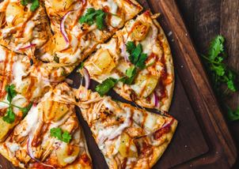
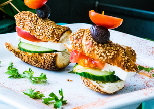
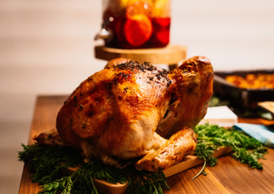

Recipes

Italian recipes
Italian food is one of the few global cuisines that Indians are truly obsessed with. There are so many varieties to choose among Italian dishes in veg or non-veg.

Greek recipes
Greek food is one of the few global cuisines that Indians are truly obsessed with. There are so many varieties to choose among Greek dishes in veg or non-veg.

Turkey recipes
Turkey food is one of the few global cuisines that Indians are truly obsessed with. There are so many varieties to choose among Turkey dishes in veg or non-veg.